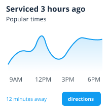

<!DOCTYPE html>
<html lang='en'>
<head>
    <meta charset='utf-8' />
    <title>Add custom markers in Mapbox GL JS</title>
    <meta name='viewport' content='width=device-width, initial-scale=1' />
    <link href="https://fonts.googleapis.com/css?family=Open+Sans" rel="stylesheet">
    <script src='https://api.tiles.mapbox.com/mapbox-gl-js/v2.2.0/mapbox-gl.js'></script>
    <link href='https://api.tiles.mapbox.com/mapbox-gl-js/v2.2.0/mapbox-gl.css' rel='stylesheet' />
    <style>
      body {
        margin: 0;
        padding: 0;
      }

      #map {
        position: absolute;
        top: 0;
        bottom: 0;
        width: 100%;
      }

      .marker {
        background-image: url('assets/img/relief.png');
        background-size: cover;
        width: 35px;
        height: 35px;
        cursor: pointer;
      }

      .mapboxgl-popup {
        min-width: 230px;
        max-width: 230px; 
      }

      /* Marker tweaks */
      .mapboxgl-popup-close-button {
        display: none;
      }

      .mapboxgl-popup-content {
        font: 400 15px/22px 'Open Sans', sans-serif;
        padding: 0px;
        text-align: center;
        align-items: center;
        background-color: rgba(255,255,255,1);
      }

      .mapboxgl-popup-content-wrapper {
        padding: 10px;
      }

      .mapboxgl-popup-content h3 {
        background: #109CF1;
        color: #fff;
        margin: 0;
        display: block;
        padding: 10px;
        border-radius: 10px 10px 0 0;
        font-weight: 700;
        margin-top: -15px;
      }

.mapboxgl-popup-content h4 {
  margin: 0;
  display: block;
  padding: 0px;
  font-weight: 400;
}

.mapboxgl-popup-content div {
  padding: 10px;
}

.mapboxgl-container .leaflet-marker-icon {
  cursor: pointer;
}

.mapboxgl-popup-anchor-top > .mapboxgl-popup-content {
  margin-top: 15px;
}

.mapboxgl-popup-anchor-top > .mapboxgl-popup-tip {
  border-bottom-color: #109CF1;
}


    </style>
</head>
<body>

<div id='map'></div>

<script>

mapboxgl.accessToken = 'pk.eyJ1IjoibHVpc2NhYnJlcmE3NyIsImEiOiJja21ucXl5NzAwZTA5MnZrNXZ4dG9hMGVlIn0.AGLuqmVZCqfuVq5wR2ngaA';

var map = new mapboxgl.Map({
  container: 'map',
  style: 'mapbox://styles/luiscabrera77/ckn52zqqa058y17roq8zndr38',
  center: [-86.854647, 35.934168],
  zoom: 11
});

// code from the next step will go here!
var geojson = {
  type: 'FeatureCollection',
  features: [
  {
    type: 'Feature',
    geometry: {
      type: 'Point',
      coordinates: [-86.86208635568619,35.932595912580766]
    },
    properties: {
      title: 'The Factory',
      description: 'Behind MafiaoZas',
    }
  },
  {
    type: 'Feature',
    geometry: {
      type: 'Point',
      coordinates: [-86.82438254356384,35.93367094918124]
    },
    properties: {
      title: 'Whole Foods',
      description: 'On the back'
    }
  },
  {
    type: 'Feature',
    geometry: {
      type: 'Point',
      coordinates: [-86.81962162256241,35.94053129294755]
    },
    properties: {
      title: 'Walmart',
      description: 'Next to Home & Garden'
    }
  },
  {
    type: 'Feature',
    geometry: {
      type: 'Point',
      coordinates: [-86.88441038131712,35.96433482463347]
    },
    properties: {
      title: 'Publix',
      description: 'By the UPS Store'
    }
  },
  {
    type: 'Feature',
    geometry: {
      type: 'Point',
      coordinates: [-86.87860071659088,35.94559744503743]
    },
    properties: {
      title: 'Judge Fulton Park',
      description: 'Next to tennis courts'
    }
  },
  {
    type: 'Feature',
    geometry: {
      type: 'Point',
      coordinates: [-86.82325601577757,35.947165215409214]
    },
    properties: {
      title: 'Coolsprings Plaza',
      description: 'Behind the Starbucks'
    }
  },
  {
    type: 'Feature',
    geometry: {
      type: 'Point',
      coordinates: [-86.7962762,36.0197665]
    },
    properties: {
      title: 'Brenthaven Cumberland Church',
      description: 'Right side of Parking Lot'
    }
  },
  {
    type: 'Feature',
    geometry: {
      type: 'Point',
      coordinates: [-86.9054698,36.0318492]
    },
    properties: {
      title: 'Heritage Medical Associates',
      description: 'Far back by the big tree'
    }
  },

]
};

// add markers to map
geojson.features.forEach(function(marker) {

// create a HTML element for each feature
var el = document.createElement('div');
el.className = 'marker';

// make a marker for each feature and add to the map
new mapboxgl.Marker(el)
  .setLngLat(marker.geometry.coordinates)
  new mapboxgl.Marker(el)
  .setLngLat(marker.geometry.coordinates)
  .setPopup(new mapboxgl.Popup({ offset: 25}) // add popups
  .setHTML('<h3>' + marker.properties.title + '</h3><p>' + marker.properties.description + '</p>' + ''))
  .addTo(map);
});


</script>

</body>
</html>